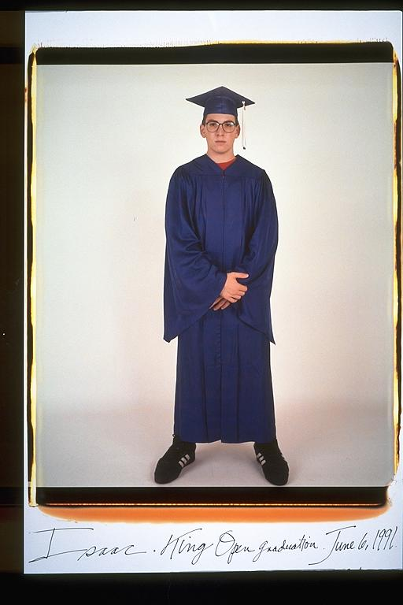

Pals: Boys Who Grew Up Together
elsadorfman.com/pals
Aldo: Ohhh, graduation day. You're done, you're the best, you did it, congratulations. Now go stand in line over there, so you can start at the bottom again. To me graduations are just a sad reminder that wherever you're going from here, it's an uphill battle. Issac expresses these exact sentiments, or maybe he just has to go to the bathroom and is trying not to think about it.

elsad@comcast.net